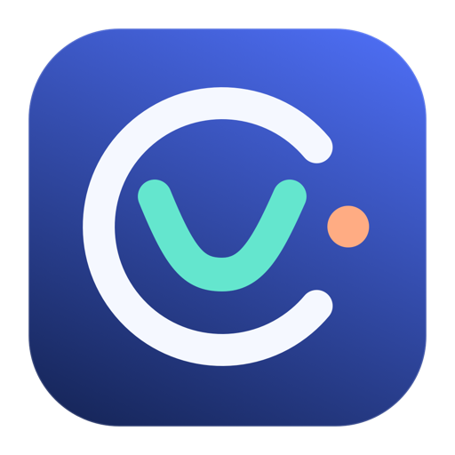
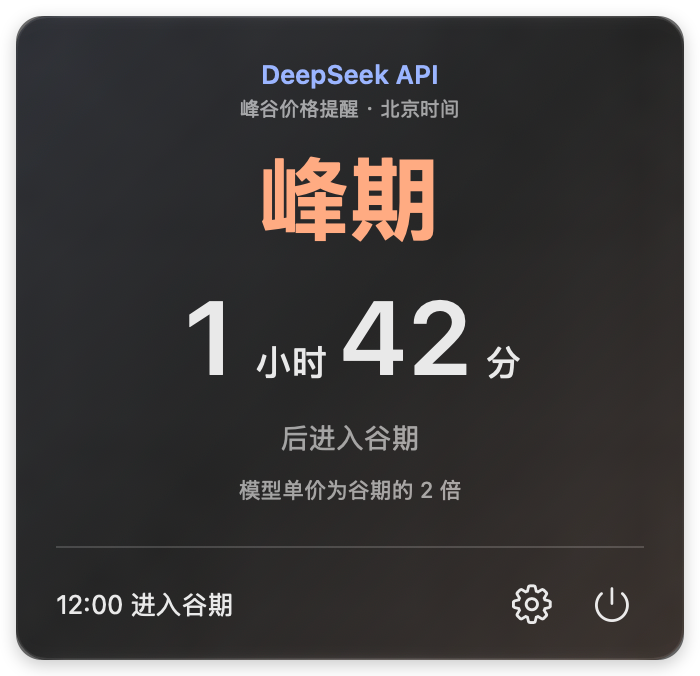
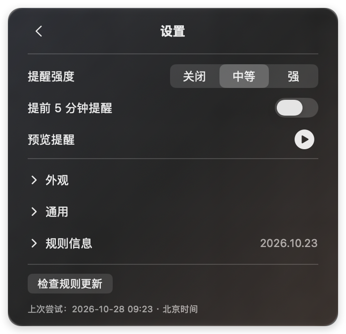

01 / 当前状态
现在是峰，还是谷？
菜单栏用简洁状态图标和剩余时长提示当前时段。打开面板，可查看价格差异与下一次真实切换。

谷蹬macOS 菜单栏 · 北京时间 · MVP 开发中
一眼看懂现在是高价还是低价，距离下一阶段还有多久。谷蹬安静地待在菜单栏，需要时提醒你。

轻巧 · 清楚 · 由你掌控
谷蹬只做一件事：帮助你留意 DeepSeek API 的峰谷计价时间。
01 / 当前状态
菜单栏用简洁状态图标和剩余时长提示当前时段。打开面板，可查看价格差异与下一次真实切换。
02 / 提醒偏好
选择关闭、中等或强提醒，也可开启提前 5 分钟提醒。强提醒按 30 秒重复并可在通知上停止；系统通知受 macOS 通知设置、专注模式和静音状态影响。
03 / 规则来源
规则包包含版本、覆盖范围和校验信息。规则过期或无法确认时，谷蹬会提示待更新，不猜测精确倒计时。

你的调用，由你决定
谷蹬不连接你的 DeepSeek 账户，不读取请求内容，也不统计 Token 用量。网络仅用于检查规则包更新；规则候选由维护者依据官方信息复核。
EasyAPIClock · 开源项目
当前开发版 0.1.1，MVP 正在开发中；首个公开版本发布前不提供下载，可先查看源码与开发进度。